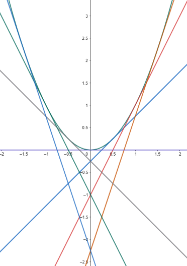

Table of Contents
Theory of First Order Equations
Picard Iteration
To answer the question of whether a solution exists for a given initial
value problem, we have the following theorem:
Theorem:
Let the functions $f$ and $\partial f/\partial y$ be continuous in some
rectangle $a<x<b$ and $c<y<d$ containing the point $(p,q)$.
Then in some
interval
$p-h<x<p+h$ contained in $a<x<b$, there is a unique solution
$y=g(x)$ of the
initial value problem
$$\frac{dy}{dx} = f(x,y)\qquad y(p)=q $$
I won't give a formal proof of this theorem but I will sketch out the
approach used to build a careful proof. The first tool is that we convert
our differential equation to an integral equation.
A function $y(x)$ solves the initial value problem
$$\frac{dy}{dx}=f(x,y)\qquad y(p)=q $$
if and only if it solves the integral equation
$$y(x)=\int_p^x f(t,y(t))\, dt\quad + \quad q$$
You can check the equivalence of these two problems by differentiating the
integral equation to show it leads to the initial value problem. Now we
will build an iterative process for creating a solution to the
integral equation.
Our procedure is to start with an initial guess, $y_0(x)$ for the solution
to the initial value problem. Since the one value we do know is that
$y(p)=q$, we'll make our first guess $y_0(x)=q$, the constant function. We
then compute
$$
y_{n+1}(x)=\int_p^x f(t,y_n(t)) dt\quad + \quad q.
$$
Let's see how this works with an example. Consider the initial value
problem
$$\frac{dy}{dx}=2xy,\qquad y(0)=1.$$
We start with $y_0(x)=1$ and then compute
$$ \begin{align}
y_1(x)&=\int_0^x 2t(1) dt + 1 = \int_0^x 2t dt + 1 = x^2+1 \\
y_2(x)&=\int_0^x 2t(y_1(t))dt + 1 = \int_0^x 2t(t^2+1)dt + 1
= \int_0^x 2t^3+2t dt + 1 = \frac{x^4}{2}+x^2+1 \\
&\cdots
\end{align} $$
This technique is called Picard iteration and we can show that, as long as
the hypotheses of the theorem about continuity of $f$ and $\partial
f/\partial y$ are satisfied,
the sequence of functions will converge to a limit function
$y_{\infty}(x)$, at least in some interval of the form specified in the
conclusion of the theorem. But taking the limit of both sides of the
integral equation shows that
$$
y_{\infty}(x) = \int_0^x f(t,y_{\infty}(t))\,dt\quad + \quad q
$$
so $y_{\infty}(x)$ is a solution to the integral equation, and hence
the solution to the initial
value problem. You are welcome to come see me in my office if you
are interested in seeing the full details.
We've already looked at iterative processes like
Euler's method to build better and better approximations to the
solution of the differential equation. Those techniques are easier and
will usually converge much quicker than Picard iteration, which is why
they are used in practice. The
advantage of using Picard iteration for the integral equation is that
while it is a more
complicated technique, it is much
easier to show the process actually converges to a solution because
integration is a
better behaved process (in a technical numerical analysis sense) than
differentiation. And since this process converges to a solution, we are
guaranteed a solution exists. We will return to using integral operators
again when we get to the chapter on Laplace transforms. The connections
between differential equations and integral operators form a deep and
fruitful area of both theoretical and practical research.
You should note that this theorem only guarantees
us that we have a solution that exists in some interval around our
initial point. We have no guarantee that the solution doesn't stop
somewhere. In fact, it is quite possible for a solution to only exist
for a finite interval as we saw when we discussed explosions earlier. On
the other hand, Euler's method and the
improved Euler's method will almost always produce results on an
infinite interval. It will be up to you to watch for signs that the
numerical results no longer approximate the true solution (which may not
exist any longer). To detect explosions you need to recognize an
explosion exists in the differential equation and/or use more sophisticated
software that tests for singularities in the result.
Unfortunately, sometimes the numerical methods can be fooled into
thinking a solution explodes even when it doesn't. This is another reason
why it is important for you to understand both differential equations and the
processes used to solve them and not just rely on the output of a tool.
Clairaut Equations
Once you have a theorem that tells you everything works out fine as long as
various conditions are satisfied, it is natural to look at what happens when
those conditions are not met. One interesting type of equation that
usually doesn't meet the conditions of the theorem above are Clairaut equations.
A Clairaut equation is an equation of the form
$$y = xy' + f(y')$$
for some function $f$. Note that here we are writing $y$ as a function of
$x$ and $y'$ instead of $y'$ as a function of $x$ and $y$. We write this with
the $y'$ notation instead of $dy/dx$ because we won't be splitting up $dy$ and
$dx$ and the tighter notation $y'$ will make things easier to read in what follows.
If we differentiate both sides of a Clairaut equation we get
$y'=y' + xy'' +f'(y')y''$, which simplifies to
$$(x+f'(y'))y''=0.$$
Then either $y''=0$ or $x+f'(y')=0$. In the former case, we find
$y=cx+k$ for constants $c$ and $k$. Now this has two arbitrary constants,
and since our original equation was of first-order, that is one more
constant than we should get. The issue is that when we differentiated at the beginning,
we introduced another arbitrary constant. To get rid of this, we substitute
$y=cx+k$ back into our original equation. Since $y'=c$, we find
$$\begin{align}
cx+k&=cx+f(c) \\
k&=f(c).
\end{align}$$
So a one-parameter family of solutions (the general solution) to the Clairaut equation is
$$ y = cx + f(c). $$
That leaves $x+f'(y')=0$ as the other possibility, which will typically produce
an additional singular solution.
Paradigm
$$y = xy' - \frac{(y')^2}{4}$$
Step 1: Differentiate both sides and simplify.
$$0 = (x-2y')y''=0$$
Step 2: Write out the general solution from $y''=0$.
As derived above, the general solution is $y=cx+f(c)$, which in this case gives us
$$y=cx-\frac{c^2}{4}.$$
Step 3: Solve $x-f'(y')=0$ and plug back into the original equation to find any singular solution(s).
I usually write the function $f$ in terms of a dummy variable $t$ to avoid confusion
at this step. Since $f(t)=-t^2/4$, $f'(t)=-t/2$. So our equation $x+f'(y')=0$ becomes
$$\begin{align}
x-\frac{y'}{2}&=0 \\
y'&=2x \\
y&=x^2+C.
\end{align}$$
The arbitrary constant $C$ is again a result of our having differentiated the original equation. We have
to plug back into the original equation to find out when we actually have a singular solution. Since
here $y'=2x$, we get
$$\begin{align}
x^2+C&=x(2x)-\frac{(2x)^2}{4} \\
x^2+C&=2x^2-x^2 \\
C&=0
\end{align}$$
and so the singular solution is
$$y=x^2.$$
Discussion
Some of the solutions to $y=xy'-(y')^2/4$ are graphed at the right.

This doesn't look like the graphs of solutions to first-order differential equations we have seen before.
Here the solution curves all cross one another, in contrast to what we saw in the slope fields section.
And the region above $y=x^2$ seems to be blank. The theorem in the section above on Picard Iteration promised
unique solutions at every point. That certainly isn't the case here. Of course, this doesn't contradict
the theorem, because most Clairaut equations (and this one in particular) do not satisfy the hypotheses of
the theorem. In the theorem, the equation was written for $y'$ as a function of $x$ and $y$, but in a
Clairaut equation we write $y$ as a function of $x$ and $y'$. Suppose we use algebra to solve for $y'$ in the
$y=xy'-(y')^2/4$. This is a quadratic equation in $y'$, so we have to apply the quadratic formula to get
$y'=2x\pm2\sqrt{x^2-y}.$
Now consider what this says if $x=0$ and $y=-1$. Plugging in we find $y'=\pm2$. And if you look at the
graph of solutions at the point $(0,-1)$, you can see that we indeed have two solutions, one with slope
$2$ and one with slope $-2$. On the other hand, if $x=0$ and $y=1$, then $y'=\pm2\sqrt{-1}$ so there are
no real solutions passing through the point $(0,1)$.
In terms of our theorem, obviously if the right-hand side of $y'=f(x,y)$ has two different values,
we have to expect two different solutions. And if $f(x,y)$ doesn't return a real value, then we can't
expect a real solution. But what about when we are along the curve $y=x^2$. In this case, we find
just one value for $y'$ since the discriminant is 0. But the theorem requires that $\partial f/\partial y$ be
continuous. Computing the partial derivative of $f$ we find
$$\begin{align}
\frac{\partial f}{\partial y} &= \frac{\partial}{\partial y} \left(2x\pm2\sqrt{x^2-y}\right) \\
&= \pm \frac{1}{\sqrt{x^2-y}} \\
\end{align}$$
which is undefined along $y=x^2$, so the theorem doesn't apply here either.
What happens in this particular case is that while we have only a single value for $y'$ along the
parabola, which is $y'=2x$,
this is in fact a double-root of the quadratic equation for $y'$.
So we end up with two solutions, which both have the same slope and thus are tangent, as shown in the graph
above. In this case, we say $y=x^2$ is the envelope of the family of solutions $y=cx-c^2/4$.
As a side note, once we have these solutions, we can stitch them together if we are careful. For example,
define a function
$$
g(x)=\begin{cases}
-2x-1 \text{ for } x<-1,\\
x^2 \qquad\quad\text{ for } -1\le x\le 1,\\
2x-1 \quad\text{ for } x>1.
\end{cases}
$$
Then $y=g(x)$
is a solution to the differential equation that starts heading straight with slope -2 but curves smoothly through
the origin till it heads back up straight with slope 2, with the curve being differentiable at every point since
the derivatives match when you switch from the straight line to the parabola and then back. Finding good curves that
switch between different directions smoothly is important in computer graphics and computer aided design (smoothly here
is actually a technical term which typically means requiring some number of derivatives to match depending
on the application).
©1994-2026 Andrew G. Bennett